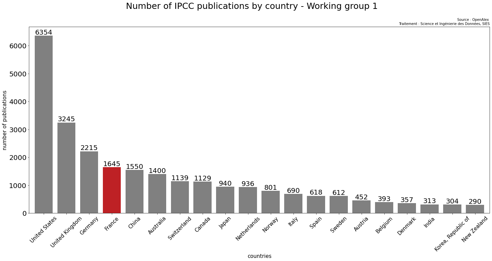
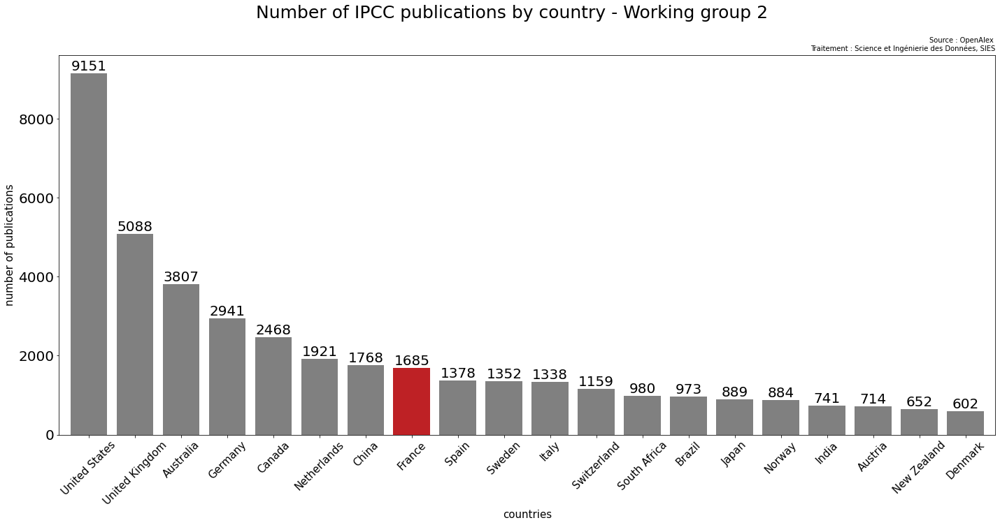
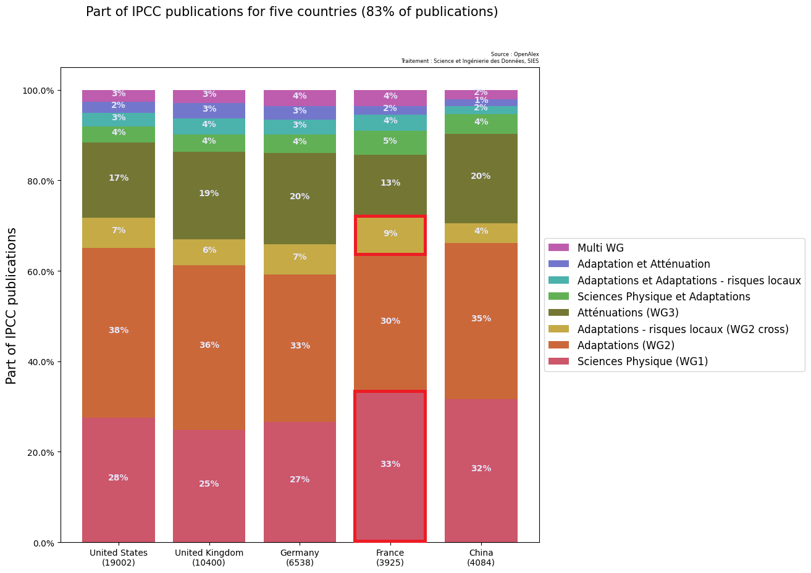

üå≥ üê¶ Transition √©cologique pour un d√©veloppement soutenable
13 mars 2023
SIES - DISD
Contexte
- üß± Les structures du rapport du GIEC et de l'IPBES
-
üìÖ Les dates de parutions des workings groups du GIEC sont diff√©rentes :
- WG1 : publié en août 2021 - Sciences Physiques
- WG2 et cross chapters : février 2022 - Adaptation et risques
- WG3 : avril 2022 - Atténuation
- L'IPBES est publié en mai 2019
S'il ne fallait retenir que ça:
-
üßò Des r√©f√©rences Fran√ßaises autant cit√©es dans le GIEC que dans l'IPBES
-
✨ La France brille dans les sciences physiques, les publications françaises sont les 4ème plus utilisées pour le 1er working group du GIEC (Physical science)
-
⏳ Les rapports s'appuient sur des publications récentes par rapport à leur date de parutions
- üë©‚Äçüî¨ En France, le CNRS contribue le plus au GIEC et IPBES
Points abordés :
-
üèÜ Comment se situe la France dans les r√©f√©rences cit√©es par les rapports du GIEC et de l'IPBES de mani√®re globale ?
-
üìä Quel est le profil de participation de la France dans ces r√©f√©rences √† l'√©chelle des workings groups et dans le temps ?
- üë©‚Äçüî¨ En France, qui contribue au sujet ?
Méthodologie
- üßπ Collecter & nettoyer
-
üí∞ Enrichir:
- Biblio-glutton: enrichissement des identifiants de plublications (doi) manquants
- OpenAlex: pays, topics, personnes ayant travaillées sur la publication et les structures associés
- üëÅÔ∏è Visualiser
- ♿ Rendre accessible : elastic search --> datasupR
La France dans les références citées par les rapports GIEC et IPBES – Grands chiffres (1/2)
Références françaises citées par le GIEC :
-
Part de marché total : 7,4 %
-
Nombre de publications : 3939
- Rang : 7 ème
Pour toutes les publications du GIEC, la France se situe 7 ème juste après le Canada et la Chine (top 20)

Annexe - Nombre totaux par pays (top 20)
La France dans les références citées par les rapports GIEC et IPBES – Grands chiffres (2/2)
Références françaises citées par l'IPBES :
-
Part de marché total : 7,1 %
-
Nombre de publications : 467
- Rang : 7 ème
Pour celles de l'IPBES, la France se situe 7ème également juste après l'Allemagne et les Pays-bas (top 20)

Annexe - Nombre totaux par pays (top 20)

Le profil de participation de la France dans les références citées (1/3)
Positionnement relatif de la France par rapport aux autres pays pour les workings groups du GIEC :
La France est en tête pour les publications qui concernent les sciences physiques mais moins citée pour l'adaptation et l'atténuation


Annexe - Nombre totaux par pays et par WG (top 20)




Le profil de participation de la France dans les références citées (2/3)
La structure de la contribution française se distingue-t-elle de celle des autres pays pour les workings groups du GIEC ?
La répartition des publications dans les différents workings groups pour quelques pays

Le profil de participation de la France dans les références citées (3/3)
Quelle est la répartition temporelle des publications françaises ?
La recherche des années précedant la publication du rapport prédomine
Une recherche un peu plus ancienne pour l'IPBES (par rapport à sa date de sortie - 2019)